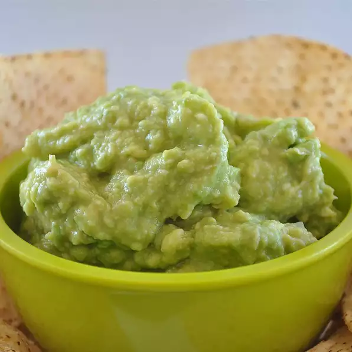

Guacamole

Description
This simple guacamole recipe is perfect for satisfying your cravings as
well as for sharing with friends and family.
Ingredients
- 2 avocados
- ½ lemon, juiced
- 2 tablespoons chopped onion
- ½ teaspoon salt
- 2 tablespoons olive oil
Steps
- Cut the avocados into halves. Remove the seeds, and scoop out the
pulp into a small bowl. Use a fork to mash the avocado. Stir in
lemon juice, onion, salt, and olive oil. Cover the bowl, and
refrigerate for 1 hour before serving.